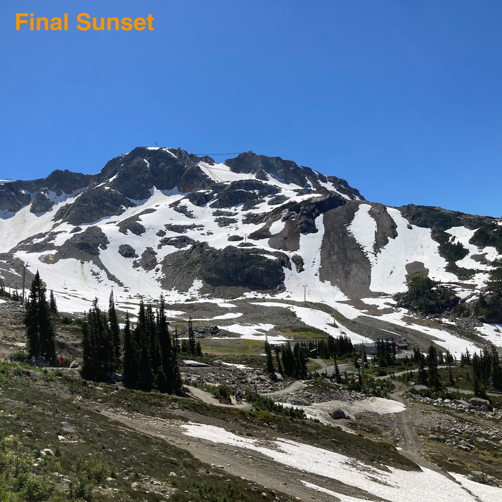

"Final Sunset"
"Final Sunset" is my first non-album single, originally intended to be on my third DJB album Troubles in Transit. The album never came to fruition as work began on a separate project, Burning the Daylight Oil, in late 2022, a few months after the completion of "Final Sunset". While Troubles in Transit was meant to be a side project to that project when work began, I was already working enough on Burning, so no work was really done on the album apart from "Final Sunset", "Overtaker", and an intro. Eventually, when enough time had passed since I started work on the project, I decided to move onto other things and leave the album in the past.
Background
In July 2022, less than a month after the release of my second DJB album Twinned, I discovered (through YouTube, I think, this was a long time ago after all) an on-going competition on the website Tracklib to sample a couple tracks from their website and send in the song you make from them, and whoever wrote the best track would get signed to Armada Music. Cool deal, but the reason why it caught my eye was because the judge of the competition, and who's songs you had to sample, was Chicane, famous for tracks like "Offshore", "Saltwater" and "Don't Give Up". In particular, you had to sample a choice of four songs from his first album, Far From the Maddening Crowds. Considering what was at stake, I decided to give it a go.
Recording and production
What was notable about this track, and when I recorded it, was the fact that it was just as I was starting to enter into a brief hiatus, mainly because the (poor) quality of the tracks on Twinned made me unmotivated. However, because I wanted to win this competition, I forced myself back into the saddle, and attempted to make the very best song I could with the samples, using proper structure and sounds. What's notable about this is that it was the first time I had done this sort of thing, focusing on structure and trying to make a song "really good". This would be seen again as work started on Burning the Daylight Oil a few months later.
By the end of production, which took a couple days, I felt happy with the product, and submitted it. I found out a few months later that it didn't win, which was fair enough. I released the track as my first single from my next album, then called Business as Usual, and left it at that. However, sooner than the results had come in, in August 2022, I actually found a copy of Far From the Maddening Crowds in the wild, on CD. I bought it, listened to it, and loved it. It is still, to this day, one of my top ten albums, so there's something positive that came out of this.
Interestingly, "Final Sunset" was the first instance of the name "Engine Two" being used for my music, a name I'd got from reading and writing about aviation. As such, it's the oldest release featured on this website, because almost all of the DJB stuff sucks, and I don't want to put it beside my current music, which is at least half-decent.
This song was later included, in a slightly remixed version, on The Defibrillated Collection.
Artwork
The artwork features a mountain in Whistler, Canada, during the "two weeks where it wasn't snowing", according to a local. I wanted to use a image that was similar to the cover of Far From the Maddening Crowds, featuring a large landscape with a pattern on it, but contrasting with it in the way that the pattern was formed. Now, looking through my photo library from the time I took that photo, I've already found a photo that probably would have been a much better cover, but, unfortunately, I can't change the past.

Released: 17 July 2022
Recorded: July 2022